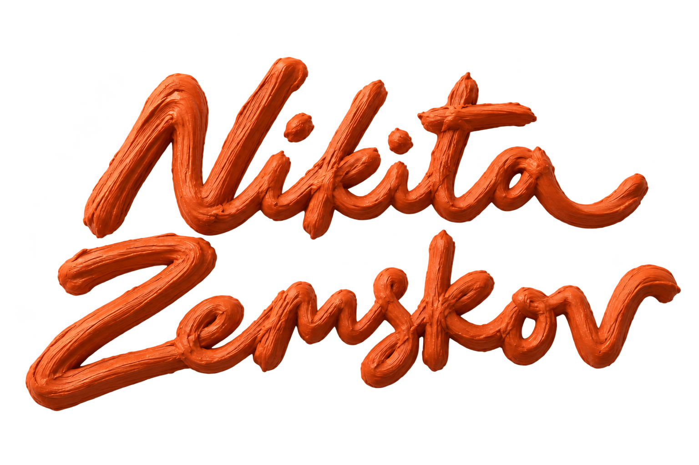

Цветок растёт.

Цветок растёт.
Вниз — раскрыть · Вверх — закрыть
Создаю сайты.
Меня вдохновляют творчество и возможность помогать людям продвигать свои продукты.
Я создаю сайты. Для меня это способ соединить оформление с конкретной задачей человека.
Хочу, чтобы сайт понятно рассказывал о вашем деле и помогал посетителю сделать следующий шаг — узнать подробности или связаться с вами.
Сначала разбираюсь в задаче. Затем собираю сайт вокруг неё.
До начала работы обсудим состав страниц, материалы, стоимость и срок. Так будет понятно, что именно я делаю и какой результат вы получите.
Рассказать о задачеВы рассказываете о своём деле, посетителях и цели сайта. Я уточняю, какие страницы и функции нужны и какие материалы уже есть.
Согласуем объём, стоимость и срок до начала работы.
Располагаю разделы в понятном порядке: с чего начинается знакомство, что нужно объяснить и где оставить заявку.
Обсуждаем структуру и недостающие тексты или изображения.
Подбираю типографику, цвета и композицию. После согласования оформления собираю страницы для компьютера и телефона.
Правки собираем одним списком в рамках согласованного объёма.
Проверяю страницы, кнопки и форму заявки. После согласования публикую сайт и передаю файлы с краткой инструкцией.
Домен, платный хостинг и дальнейшую поддержку обсуждаем отдельно.
Ориентир для одностраничного сайта — от 20 000 ₽, личного сайта — от 30 000 ₽, небольших доработок — от 10 000 ₽. Для точной оценки нужно понять объём: сколько страниц и разделов требуется, какие материалы уже есть и какие функции нужны. Расскажите об этом в заявке — стоимость можно будет обсудить предметно.
В одностраничный и личный сайт входят два раунда правок по согласованной структуре, в небольшую доработку — один. Раунд — это один собранный список комментариев. Новые страницы, функции и смену согласованной структуры оцениваем отдельно.
Для простого одностраничного сайта ориентир — 7–10 рабочих дней, для личного сайта — 10–14. Небольшие доработки — от 3 рабочих дней. Срок зависит от объёма сайта и готовности материалов. Если у вас есть важная дата запуска, укажите её в заявке — обсудим, что можно успеть.
Чтобы начать разговор, достаточно описать своё дело, цель сайта и привести несколько примеров того, что вам нравится. Подробности можно уточнить после знакомства.
Напишите, какие материалы уже есть и чего не хватает. Это поможет заранее понять объём подготовки и обсудить, как поступить с недостающими текстами и изображениями.
Да. Пришлите ссылку и расскажите, что хотите изменить: оформление, структуру, мобильную версию или способ связи с посетителями.
Укажите, есть ли у вас домен и где сейчас размещён сайт. Если сайта ещё нет, способ публикации и связанные расходы обсудим до начала работы.
Пишите мне в Telegram.
Расскажите о своём деле и о том, какой сайт нужен. Можно написать сразу, без заполнения заявки. Если удобнее — оставьте заявку здесь или напишите на почту.